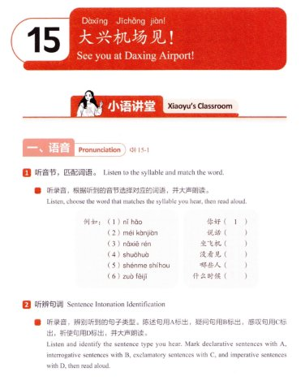
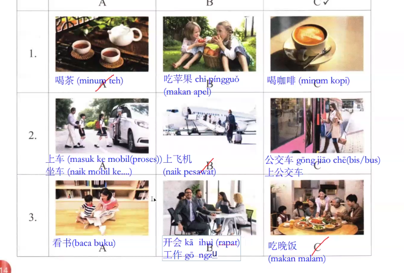
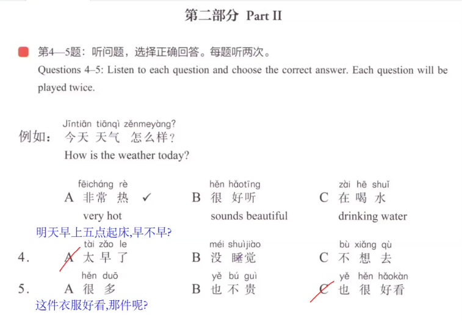
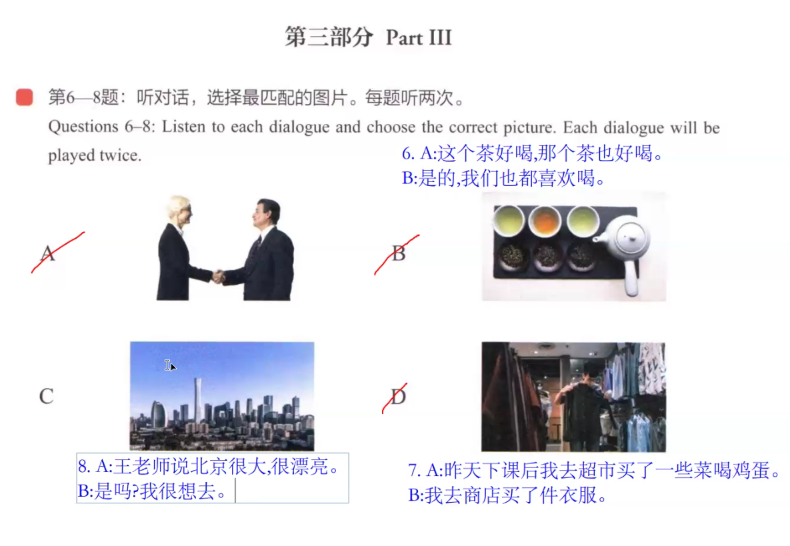
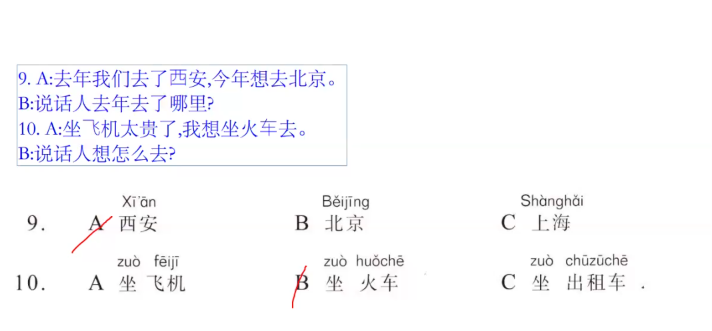
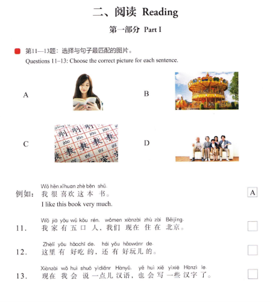
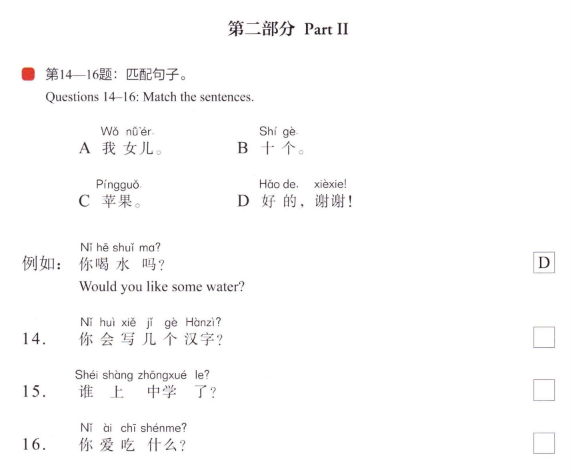
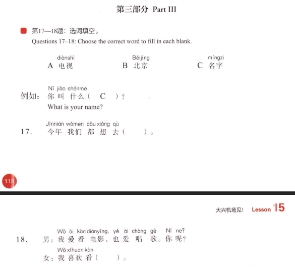
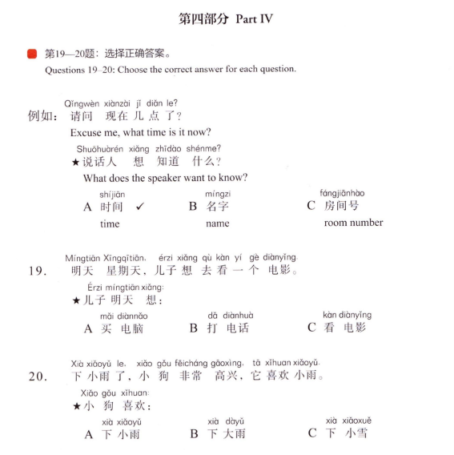

Mendengarkan rekaman audio (Audio 15-1), memilih kata Hanzi yang sesuai dengan suku kata yang didengar, lalu membaca nyaring kata tersebut.

🎧Instruksi Soal 1 (Audio 15-1)
听录音，根据听到的音节选择对应的词语，并大声朗读。
(Listen, choose the word that matches the syllable you hear, then read aloud / Dengarkan rekaman, cocokkan suku kata pinyin bernomor (1)–(6) dengan kata Hanzi yang tepat, lalu lafalkan dengan lantang.)
例如 Contoh
( 1 ) nǐ hǎo
➔
你好
Jawaban: ( 1 )
🔊 Suku Kata yang Didengar (音节):
1
nǐ hǎo
halo (hello) · Nada 3 + Nada 3
Contoh
2
méi kànjiàn
tidak melihat (didn't see) · Nada 2 + Nada 4 + Nada 4
🔊
3
nàxiē rén
orang-orang itu (those people) · Nada 4 + Nada 1 + Nada 2
🔊
4
shuōhuà
berbicara (speak / talk) · Nada 1 + Nada 4
🔊
5
shénme shíhou
kapan (when) · Nada 2 + Netral + Nada 2 + Netral
🔊
6
zuò fēijī
naik pesawat (take a plane) · Nada 4 + Nada 1 + Nada 1
(Listen and identify the sentence type you hear. Mark declarative sentences with A, interrogative sentences with B, exclamatory sentences with C, and imperative sentences with D, then read aloud / Tandai: A = Kalimat Berita, B = Kalimat Tanya, C = Kalimat Seru, D = Kalimat Perintah.)
1
Nǐ shì xuéshēng ma
你是学生吗？ — Apakah kamu murid? · Kalimat Tanya (疑问句)
B (Contoh)
2
Wǒ ài chī shuǐguǒ
我爱吃水果。 — Saya suka makan buah. · Kalimat Berita (陈述句)
A
3
Zhè jiàn yīfu zhēn piàoliang
这件衣服真漂亮！ — Baju ini sungguh indah! · Kalimat Seru (感叹句)
C
4
Nǐmen qù nǎlǐ
你们去哪里？ — Kalian pergi ke mana? · Kalimat Tanya (疑问句)
Mendengarkan frasa pendek (setiap rekaman diputar dua kali) dan memilih gambar yang tepat (Pilihan A, B, atau C).

🎧Instruksi Soal Listening Part 1 (Audio 15-2)
第 1—3 题：听短语，选择正确图片。每题听两次。
Questions 1–3: Listen to each phrase and choose the correct picture. Each phrase will be played twice.
(Pertanyaan 1–3: Dengarkan frasa pendek, lalu pilih gambar yang tepat. Setiap nomor diperdengarkan dua kali.)
💡 Klik tombol 🔊 Putar Audio pada setiap nomor, atau klik masing-masing kartu opsi untuk mendengarkan audio pelafalan Mandarin!
1
Nomor 1: Minuman & Makanan (喝茶 vs 吃苹果 vs 喝咖啡)
Pilihan A
🍵🫖
喝茶
hēchá
Minum teh
Teko putih dan dua cangkir teh di atas tatakan kayu
✓ Kunci Jawaban (A)
Pilihan B
🍎👧
吃苹果
chīpíngguǒ
Makan apel
Dua anak perempuan duduk di taman sambil makan buah apel
Pilihan C
☕✨
喝咖啡
hēkāfēi
Minum kopi
Secangkir kopi latte dengan latte art di atas piring kecil
Pembahasan Soal 1: Rekaman audio memperdengarkan frasa 喝茶 (hē chá = minum teh). Gambar A menampilkan dua cangkir teh dan teko. Gambar B adalah 吃苹果 (chī píngguǒ = makan apel) dan gambar C adalah 喝咖啡 (hē kāfēi = minum kopi). Jadi, jawaban yang tepat adalah A.
2
Nomor 2: Transportasi (上车/坐车 vs 上飞机 vs 公交车/上公交车)
Pilihan A
🚐🏫
上车 / 坐车
shàngchē / zuòchē
Masuk ke mobil (proses) / Naik mobil ke...
Anak-anak sekolah sedang bersiap masuk/naik ke dalam mobil putih
Pilihan B
✈️🧳
上飞机
shàngfēijī
Naik pesawat
Para penumpang berjalan menaiki tangga untuk masuk ke dalam pesawat
✓ Kunci Jawaban (B)
Pilihan C
🚌👩
公交车 / 上公交车
gōngjiāochē / shànggōngjiāochē
Bis/bus / Naik bus
Seorang wanita melangkah masuk ke dalam bus umum
Pembahasan Soal 2: Rekaman audio memperdengarkan frasa 上飞机 (shàng fēijī = naik pesawat). Gambar B memperlihatkan penumpang menaiki tangga pesawat. Gambar A adalah 上车 / 坐车 (shàng chē / zuò chē = naik mobil) dan gambar C adalah 公交车 / 上公交车 (gōngjiāochē = bus / naik bus). Jadi, jawaban yang tepat adalah B.
3
Nomor 3: Aktivitas (看书 vs 开会/工作 vs 吃晚饭)
Pilihan A
📖👩👦
看书
kànshū
Baca buku
Seorang ibu dan anak laki-laki duduk membaca buku bersama di depan rak buku
Pilihan B
💼💻
开会 / 工作
kāihuì / gōngzuò
Rapat / Bekerja
Sekelompok rekan kerja sedang rapat dan bekerja dengan laptop di meja kantor
Pilihan C
🍽️👨👩👧👦
吃晚饭
chīwǎnfàn
Makan malam
Keluarga besar berkumpul di meja makan bundar menikmati hidangan makan malam
✓ Kunci Jawaban (C)
Pembahasan Soal 3: Rekaman audio memperdengarkan frasa 吃晚饭 (chī wǎnfàn = makan malam). Gambar C menampilkan keluarga yang sedang makan malam bersama. Gambar A adalah 看书 (kàn shū = baca buku) dan gambar B adalah 开会 / 工作 (kāihuì / gōngzuò = rapat / bekerja). Jadi, jawaban yang tepat adalah C.
📌 一、听力 · Listening Part 2: 第二部分 (Soal 4–5)
问
Part 2 · 第二部分 (第 4—5 题 · 🔊 Audio 15-3)
Mendengarkan pertanyaan dari rekaman audio, lalu memilih jawaban yang tepat (Pilihan A, B, atau C). Setiap soal diputar dua kali.

🎧Instruksi Soal Listening Part 2 (Audio 15-3)
第 4—5 题：听问题，选择正确回答。每题听两次。
Questions 4–5: Listen to each question and choose the correct answer. Each question will be played twice.
(Pertanyaan 4–5: Dengarkan pertanyaan, lalu pilih jawaban yang tepat. Setiap nomor diperdengarkan dua kali.)
💡Klik banner pertanyaan atau tombol 🔊 untuk mendengar rekaman audio soal, dan klik kartu opsi untuk mendengar pelafalan jawaban!
Bagaimana cuaca hari ini? (How is the weather today?)
Pilihan A
☀️🌡️
非常热
fēichángrè
Sangat panas (very hot)
✓ Kunci Contoh (A)
Pilihan B
🎵🎶
很好听
hěnhǎotīng
Sangat enak didengar / merdu
Jawaban untuk lagu / suara musik (sounds beautiful)
Pilihan C
🥤💧
在喝水
zàihēshuǐ
Sedang minum air (drinking water)
Jawaban untuk aktivitas orang yang sedang minum
Pembahasan Contoh: Pertanyaan menanyakan kondisi cuaca hari ini (今天天气怎么样？). Jawaban yang logis dan tepat untuk mendeskripsikan cuaca adalah A. 非常热 (fēicháng rè = sangat panas). Pilihan B 很好听 digunakan untuk suara/musik, dan pilihan C 在喝水 digunakan untuk aktivitas orang sedang minum.
Besok pagi bangun jam lima, apakah terlalu pagi? (Getting up at 5 a.m. tomorrow, is it early?)
Pilihan A
⏰🌅
太早了
tàizǎole
Terlalu pagi (too early)
✓ Kunci Jawaban (A)
Pilihan B
🥱🛏️
没睡觉
méishuìjiào
Tidak tidur
Tidak menjawab pertanyaan 早不早 (pagi atau tidak)
Pilihan C
🙅♂️🚶
不想去
bùxiǎngqù
Tidak ingin pergi
Menyatakan penolakan pergi, bukan menilai waktu
Pembahasan Soal 4: Pertanyaan menanyakan pendapat tentang waktu bangun jam 5 pagi menggunakan bentuk tanya 早不早？ (pagi atau tidak?). Jawaban yang langsung menanggapi pertanyaan tersebut adalah A. 太早了 (tài zǎo le = terlalu pagi).
Baju yang ini bagus, kalau yang itu bagaimana? (This piece of clothing looks good, what about that one?)
Pilihan A
🛍️➕
很多
hěnduō
Sangat banyak
Menyatakan jumlah, bukan menilai penampilan baju
Pilihan B
🏷️💰
也不贵
yěbúguì
Juga tidak mahal
Membahas harga, sedangkan pertanyaan membahas 好看 (bagus)
Pilihan C
👗✨
也很好看
yěhěnhǎokàn
Juga sangat bagus / cantik
✓ Kunci Jawaban (C)
Pembahasan Soal 5: Pertanyaan membandingkan dua baju dari segi tampilannya (这件衣服好看，那件呢？). Jawaban yang tepat untuk menanggapi baju kedua adalah C. 也很好看 (yě hěn hǎokàn = juga sangat bagus/cantik).
📌 一、听力 · Listening Part 3: 第三部分 (Soal 6–8)
话
Part 3 · 第三部分 (第 6—8 题 · 🔊 Audio 15-4)
第6—8题：听对话，选择最匹配的图片。每题听两次。(Questions 6–8: Listen to each dialogue and choose the correct picture. Each dialogue will be played twice).

🎧Instruksi Soal Listening Part 3 (Audio 15-4)
第 6—8 题：听对话，选择最匹配的图片。每题听两次。
Bahasa Inggris: Questions 6–8: Listen to each dialogue and choose the correct picture. Each dialogue will be played twice. Bahasa Indonesia: Pertanyaan 6–8: Dengarkan percakapan antara pembicara A dan B, lalu pilih gambar (A, B, C, atau D) yang paling cocok.
💡 Klik kartu gambar atau baris dialog untuk memutar audio pelafalan native Mandarin!
🖼️ Pilihan Gambar Acuan Buku (A, B, C, D):
Gambar A
🤝👔
握手见面(wòshǒu jiànmiàn)
Dua orang berjabat tangan (Opsi Pengecoh)
Gambar B ✓
🍵🫖
喝茶(hē chá)
Tiga cangkir teh dan teko teh di atas nampan (Kunci Soal 6)
Gambar C ✓
🏙️🇨🇳
北京(Běijīng)
Pemandangan kota Beijing yang besar dan indah (Kunci Soal 8)
Gambar D ✓
👕🛍️
买衣服(mǎi yīfu)
Seseorang memilih dan membeli baju di toko pakaian (Kunci Soal 7)
6
Soal No. 6: Menikmati Teh
🍵 Kunci Jawaban: Gambar B ✓
A：这个茶好喝，那个茶也好喝。
Zhège chá hǎohē, nàge chá yě hǎohē.
A: Teh ini enak diminum, teh itu juga enak diminum.
B：是的，我们也都喜欢喝。
Shì de, wǒmen yě dōu xǐhuan hē.
B: Ya, kami semua juga suka minum.
Pembahasan Soal 6: Kata kunci pada dialog adalah 这个茶好喝，那个茶也好喝 (teh ini enak, teh itu juga enak). Gambar yang paling tepat adalah Gambar B yang menampilkan beberapa cangkir teh dan teko.
A: Kemarin setelah selesai kelas saya pergi ke supermarket membeli beberapa sayur dan telur.
B：我去商店买了件衣服。
Wǒ qù shāngdiàn mǎile jiàn yīfu.
B: Saya pergi ke toko membeli sepotong baju.
Pembahasan Soal 7: Pembicara B menyebutkan 去商店买了件衣服 (pergi ke toko membeli baju). Gambar yang paling sesuai adalah Gambar D yang menampilkan seseorang di toko pakaian.
8
Soal No. 8: Kota Beijing yang Besar & Indah
🏙️ Kunci Jawaban: Gambar C ✓
A：王老师说北京很大，很漂亮。
Wáng lǎoshī shuō Běijīng hěn dà, hěn piàoliang.
A: Ibu Guru Wang bilang Beijing sangat besar dan sangat indah.
B：是吗？我很想去。
Shì ma? Wǒ hěn xiǎng qù.
B: Benarkah? Saya sangat ingin pergi.
Pembahasan Soal 8: Kata kunci pada percakapan adalah 北京很大，很漂亮 (Beijing sangat besar dan sangat indah). Gambar yang paling sesuai adalah Gambar C yang menampilkan pemandangan kota Beijing.
📌 一、听力 · Listening Part 4: 第四部分 (Soal 9–10)
听
Part 4 · 第四部分 (第 9—10 题 · 🔊 Audio 15-5)
第9—10题：听句子，选择正确答案。每题听两次。(Questions 9–10: Listen to each sentence and choose the correct answer. Each sentence will be played twice).

🎧Instruksi Soal Listening Part 4 (Audio 15-5)
第 9—10 题：听句子，选择正确答案。每题听两次。
Bahasa Inggris: Questions 9–10: Listen to each sentence and choose the correct answer. Each sentence will be played twice. Bahasa Indonesia: Pertanyaan 9–10: Dengarkan kalimat yang diperdengarkan beserta pertanyaannya, lalu pilih jawaban yang benar (A, B, atau C).
💡 Klik kalimat audio, pertanyaan, atau pilihan jawaban untuk mendengarkan pelafalan native Mandarin!
Tahun lalu kami pergi ke Xi'an, tahun ini ingin pergi ke Beijing.
Pertanyaan Audio (B):
说话人去年去了哪里？
Shuōhuàrén qùnián qùle nǎlǐ?
Ke mana pembicara pergi tahun lalu?
A. 西安(Xī'ān)= Xi'an✓
B. 北京(Běijīng)= Beijing
C. 上海(Shànghǎi)= Shanghai
Pembahasan Soal 9: Kalimat menyatakan 去年我们去了西安 (tahun lalu kami pergi ke Xi'an), sedangkan 北京 adalah rencana tahun ini (今年想去北京). Jadi jawaban yang tepat adalah A. 西安 (Xī'ān).
10
Soal No. 10: Pilihan Transportasi
Kalimat Audio (A):
坐飞机太贵了，我想坐火车去。
Zuò fēijī tài guì le, wǒ xiǎng zuò huǒchē qù.
Naik pesawat terlalu mahal, saya ingin naik kereta api pergi ke sana.
Pertanyaan Audio (B):
说话人想怎么去？
Shuōhuàrén xiǎng zěnme qù?
Bagaimana pembicara ingin pergi?
A. 坐飞机(zuò fēijī)= Naik pesawat
B. 坐火车(zuò huǒchē)= Naik kereta api✓
C. 坐出租车(zuò chūzūchē)= Naik taksi
Pembahasan Soal 10: Karena naik pesawat terlalu mahal (坐飞机太贵了), pembicara memilih 我想坐火车去 (saya ingin naik kereta api pergi). Jadi jawaban yang tepat adalah B. 坐火车 (zuò huǒchē).
📌 二、阅读 · Reading Part 1: 第一部分 (Soal 11–13)
阅
Reading Part 1 · 第一部分 (第 11—13 题)
第11—13题：选择与句子最匹配的图片。(Questions 11–13: Choose the correct picture for each sentence / Pilih gambar yang paling cocok untuk setiap kalimat).

📖Petunjuk & Format Soal Reading Part 1
第11—13题：选择与句子最匹配的图片。
Bahasa Inggris: Questions 11–13: Choose the correct picture for each sentence. Bahasa Indonesia: Pertanyaan 11–13: Bacalah setiap kalimat, lalu tentukan gambar (A, B, C, atau D) yang paling sesuai.
💡 Klik kartu gambar atau baris kalimat untuk mendengarkan pelafalan audio!
🖼️ Pilihan Gambar Tersedia (A — D):
Gambar A (Contoh)
📖👩
看书(kàn shū)
Wanita sedang membaca buku (Kunci Contoh)
Gambar B ✓
🎠🎡
好玩儿(hǎowánr)
Komidi putar di taman hiburan yang seru (Kunci Soal 12)
Gambar C ✓
✍️📝
写汉字(xiě Hànzì)
Kertas kotak latihan menulis aksara Hanzi (Kunci Soal 13)
Gambar D ✓
👨👩👧👦🛋️
五口人(wǔ kǒu rén)
Keluarga berlima duduk bersama di sofa (Kunci Soal 11)
例如 (Contoh Soal)
📖 Kunci Contoh: Gambar A ✓
我很喜欢这本书。
Wǒ hěn xǐhuan zhè běn shū.
Arti Terjemahan: Saya sangat menyukai buku ini. (I like this book very much.)
Pembahasan Contoh: Kalimat menyebutkan 我很喜欢这本书 (Wǒ hěn xǐhuan zhè běn shū = Saya sangat menyukai buku ini). Gambar yang paling cocok adalah Gambar A yang memperlihatkan seorang wanita sedang membaca buku.
11
Soal No. 11: Keluarga Berlima Tinggal di Beijing (我家有五口人，我们现在住在北京。)
👨👩👧👦 Kunci Jawaban: Gambar D ✓
Arti Terjemahan: Keluarga saya ada lima orang, kami sekarang tinggal di Beijing.
Pembahasan Soal 11: Kata kunci pada kalimat ini adalah 我家有五口人 (Wǒ jiā yǒu wǔ kǒu rén = Keluarga saya ada lima orang). Gambar yang paling tepat adalah Gambar D yang memperlihatkan lima anggota keluarga duduk bersama.
12
Soal No. 12: Ada yang Enak dan Ada yang Seru (这里有好吃的，还有好玩儿的。)
🎠 Kunci Jawaban: Gambar B ✓
这里有好吃的，还有好玩儿的。
Zhèlǐ yǒu hǎochī de, hái yǒu hǎowánr de.
Arti Terjemahan: Di sini ada makanan yang enak, dan juga ada wahana/permainan yang seru.
Pembahasan Soal 12: Kalimat menggunakan pola Bab 15 (……，还有……) dengan kata kunci 好玩儿的 (hǎowánr de = yang seru/menyenangkan). Gambar yang paling sesuai adalah Gambar B yang memperlihatkan komidi putar di taman hiburan.
13
Soal No. 13: Bisa Berbicara Mandarin & Menulis Hanzi (现在我会说一点儿汉语，也会写一些汉字了。)
✍️ Kunci Jawaban: Gambar C ✓
Arti Terjemahan: Sekarang saya sudah bisa berbicara sedikit bahasa Mandarin, dan juga sudah bisa menulis beberapa aksara Hanzi.
Pembahasan Soal 13: Kata kunci pada kalimat ini adalah 写一些汉字 (xiě yìxiē Hànzì = menulis beberapa aksara Hanzi). Gambar yang paling cocok adalah Gambar C yang memperlihatkan kertas latihan menulis aksara Hanzi lengkap dengan pinyin.
📌 二、阅读 · Reading Part 2: 第二部分 (Soal 14–16)
阅
Reading Part 2 · 第二部分 (第 14—16 题)
第14—16题：匹配句子。(Questions 14–16: Match the sentences / Pasangkan pertanyaan dengan respon kalimat yang paling sesuai).

📋Petunjuk & Format Soal Reading Part 2
第14—16题：匹配句子。
Bahasa Inggris: Questions 14–16: Match the sentences. Bahasa Indonesia: Pertanyaan 14–16: Pasangkan setiap kalimat dengan respon yang paling sesuai (A, B, C, atau D).
💡 Klik kartu respon atau baris kalimat untuk mendengarkan audio pelafalan alami Mandarin!
📦 Pilihan Respon Tersedia (A — D):
A:我女儿。
Wǒ nǚ’ér.
– Anak perempuan saya.
B:十个。
Shí gè.
– Sepuluh buah.
C:苹果。
Píngguǒ.
– Apel.
D:好的，谢谢！Contoh (D)
Hǎo de, xièxie!
– Baik, terima kasih! (Jawaban Contoh)
例如 (Contoh Soal)
📖 Kunci Contoh: D ✓
你喝水吗？
Nǐ hē shuǐ ma?
Arti Terjemahan: Apakah kamu mau minum air? (Would you like some water?)
👉 Pasangan Respon: D. 好的，谢谢！(Hǎo de, xièxie!) – Baik, terima kasih!
Pembahasan Contoh: Pertanyaan menawarkan minuman (你喝水吗？). Respon sopan untuk menerima tawaran adalah D. 好的，谢谢！(Baik, terima kasih!).
14
Soal No. 14: Menanyakan Jumlah Aksara Hanzi (你会写几个汉字？)
✍️ Kunci Jawaban: B ✓
你会写几个汉字？
Nǐ huì xiě jǐ gè Hànzì?
Arti Terjemahan: Berapa banyak aksara Hanzi yang bisa kamu tulis?
👉 Pasangan Respon: B. 十个。(Shí gè.) – Sepuluh buah.
Pembahasan Soal 14: Pertanyaan menggunakan kata tanya jumlah 几个 (jǐ gè = berapa buah) untuk menanyakan jumlah aksara Hanzi. Jawaban yang sesuai adalah B. 十个 (Sepuluh buah).
15
Soal No. 15: Menanyakan Siapa yang Masuk SMP (谁上中学了？)
👧 Kunci Jawaban: A ✓
谁上中学了？
Shéi shàng zhōngxué le?
Arti Terjemahan: Siapa yang sudah masuk SMP?
👉 Pasangan Respon: A. 我女儿。(Wǒ nǚ’ér.) – Anak perempuan saya.
Pembahasan Soal 15: Pertanyaan menggunakan kata tanya orang 谁 (shéi = siapa). Jawaban yang menyebutkan orang adalah A. 我女儿 (Anak perempuan saya).
16
Soal No. 16: Menanyakan Makanan yang Disukai (你爱吃什么？)
🍎 Kunci Jawaban: C ✓
你爱吃什么？
Nǐ ài chī shénme?
Arti Terjemahan: Apa yang kamu suka makan?
👉 Pasangan Respon: C. 苹果。(Píngguǒ.) – Apel.
Pembahasan Soal 16: Pertanyaan menanyakan makanan kesukaan (爱吃什么 = suka makan apa). Jawaban yang tepat adalah C. 苹果 (Apel).
📌 二、阅读 · Reading Part 3: 第三部分 (Soal 17–18)
填
Reading Part 3 · 第三部分 (第 17—18 题)
第17—18题：选词填空。(Questions 17–18: Choose the correct word to fill in each blank / Pilih kata yang tepat untuk melengkapi bagian rumpang).

✏️Petunjuk & Format Soal Reading Part 3
第17—18题：选词填空。
Bahasa Inggris: Questions 17–18: Choose the correct word to fill in each blank. Bahasa Indonesia: Pertanyaan 17–18: Pilihlah kata yang paling tepat untuk mengisi bagian rumpang dalam kalimat.
💡 Klik kartu kata atau baris kalimat untuk mendengarkan audio pelafalan alami Mandarin!
📦 Pilihan Kosakata Tersedia (A — C):
A:电视(diànshì)= televisi
B:北京(Běijīng)= Beijing
C:名字(míngzi)= nama
CONTOH例如 (Lìrú)
Kunci Contoh: [ C ✓ ] (名字 / míngzi)
你叫什么名字？
Nǐ jiào shénme míngzi?
Arti Terjemahan: Siapa namamu? (What is your name?)
🔊 Klik untuk mendengarkan lafal kalimat lengkap
💡 Penjelasan Contoh: Pola baku untuk menanyakan nama seseorang adalah 你叫什么名字？ (Nǐ jiào shénme míngzi?). Kata yang tepat untuk mengisi bagian rumpang adalah C (名字 / míngzi = nama).
17Soal No. 17: Nama Tempat Tujuan (今年我们都想去（ 北京 ）。)
Kunci: B ✓
今年我们都想去北京。
Jīnnián wǒmen dōu xiǎng qù Běijīng.
Arti Terjemahan: Tahun ini kami semua ingin pergi ke Beijing.
🔊 Klik untuk mendengarkan lafal kalimat lengkap
💡 Pembahasan Soal 17: Kata kerja 去 (qù = pergi ke) membutuhkan objek nama tempat/kota, yaitu B. 北京 (Běijīng) → 今年我们都想去北京.
Arti Terjemahan: “Saya suka menonton film, dan juga suka bernyanyi. Bagaimana dengan kamu?”
女:我喜欢看电视。Wǒ xǐhuan kàn diànshì.
Arti Terjemahan: “Saya suka menonton televisi.”
💡 Pembahasan Soal 18: Kata kerja 看 (kàn = menonton/melihat) dipasangkan dengan objek tontonan yang tersedia, yaitu A. 电视 (diànshì = televisi) → 我喜欢看电视 (Saya suka menonton televisi).
📌 二、阅读 · Reading Part 4: 第四部分 (Soal 19–20)
答
Reading Part 4 · 第四部分 (第 19—20 题)
第19—20题：选择正确答案。(Questions 19–20: Choose the correct answer for each question / Baca pernyataan dan pertanyaan, lalu tentukan jawaban yang benar A, B, atau C).

📌Petunjuk & Format Soal Reading Part 4
第19—20题：选择正确答案。
Bahasa Inggris: Questions 19–20: Choose the correct answer for each question. Bahasa Indonesia: Pertanyaan 19–20: Bacalah kalimat pengantar, lalu jawab pertanyaan bertanda bintang (★) dengan memilih opsi A, B, atau C.
💡 Klik kalimat pengantar, pertanyaan, atau pilihan jawaban untuk mendengarkan audio pengucapan alami Mandarin!
例
例如 (Contoh Soal): Menanyakan Jam Saat Ini
Teks Pengantar · 句子:
请问现在几点了？
Qǐngwèn xiànzài jǐ diǎn le?
Arti Terjemahan: Permisi, sekarang jam berapa ya? (Excuse me, what time is it now?)
Pertanyaan Berbintang · 问:
★ 说话人想知道什么？
★ Shuōhuàrén xiǎng zhīdào shénme?
Arti Terjemahan: Apa yang ingin diketahui oleh pembicara? (What does the speaker want to know?)
A. 时间(shíjiān)= Waktu (time)✓
B. 名字(míngzi)= Nama (name)
C. 房间号(fángjiānhào)= Nomor kamar (room number)
💡 Pembahasan Contoh: Pembicara menanyakan 现在几点了？ (sekarang jam berapa?), yang berarti ia ingin mengetahui informasi tentang A. 时间 (shíjiān = waktu/jam).
19
Soal No. 19: Rencana Anak Besok (明天星期天，儿子想去看一个电影。)
Teks Pengantar · 句子:
明天星期天，儿子想去看一个电影。
Míngtiān Xīngqītiān, érzi xiǎng qù kàn yí gè diànyǐng.
Arti Terjemahan: Besok hari Minggu, anak laki-laki saya ingin pergi menonton sebuah film.
Pertanyaan Berbintang · 问:
★ 儿子明天想：
★ Érzi míngtiān xiǎng:
Arti Terjemahan: Anak laki-laki itu besok ingin:
A. 买电脑(mǎi diànnǎo)= Membeli komputer
B. 打电话(dǎ diànhuà)= Menelepon
C. 看电影(kàn diànyǐng)= Menonton film✓
💡 Pembahasan Soal 19: Pada kalimat pengantar disebutkan 儿子想去看一个电影 (Anak laki-laki ingin pergi menonton sebuah film). Jadi jawabannya adalah C. 看电影 (kàn diànyǐng = menonton film).
20
Soal No. 20: Cuaca Kesukaan Anjing Kecil (下小雨了，小狗非常高兴)
Teks Pengantar · 句子:
下小雨了，小狗非常高兴，它喜欢小雨。
Xià xiǎoyǔ le, xiǎo gǒu fēicháng gāoxìng, tā xǐhuan xiǎoyǔ.
Arti Terjemahan: Turun hujan gerimis, anjing kecil sangat senang, ia suka hujan gerimis.
Pertanyaan Berbintang · 问:
★ 小狗喜欢：
★ Xiǎo gǒu xǐhuan:
Arti Terjemahan: Anjing kecil suka:
A. 下小雨(xià xiǎoyǔ)= Turun hujan gerimis✓
B. 下大雨(xià dàyǔ)= Turun hujan deras
C. 下小雪(xià xiǎoxuě)= Turun salju ringan
💡 Pembahasan Soal 20: Kalimat pengantar menyatakan 下小雨了……它喜欢小雨 (Turun hujan gerimis… ia suka hujan gerimis). Oleh karena itu, jawabannya adalah A. 下小雨 (xià xiǎoyǔ = turun hujan gerimis).